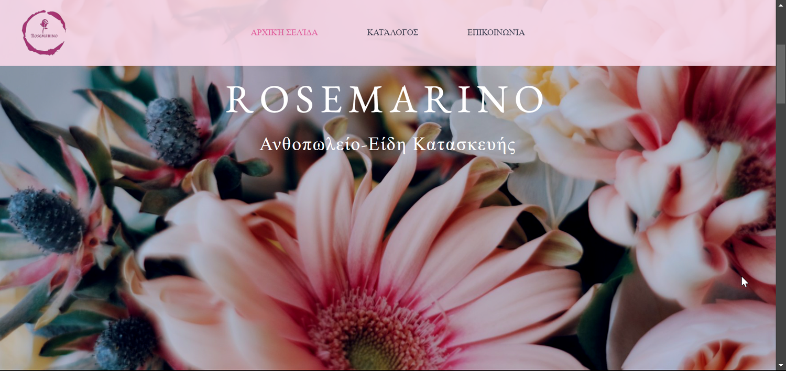

Στόχος
Δημιουργία ηλεκτρονικού καταστήματος με διαχείριση προϊόντων και περιεχομένου.

Ηλεκτρονικό κατάστημα streetwear με WordPress και WooCommerce. Το παρόν portfolio δεν χρησιμοποιεί πλέον WordPress.

Δημιουργία ηλεκτρονικού καταστήματος με διαχείριση προϊόντων και περιεχομένου.
Ρύθμιση ηλεκτρονικού καταστήματος με WordPress και WooCommerce.
Υλοποίηση ηλεκτρονικού εμπορίου, διαχείριση ιστοσελίδας και σχεδιασμός ιστού.
Η εικόνα ενδέχεται να είναι ενδεικτική. Σύνδεσμοι προς πηγαίο κώδικα ή ζωντανή επίδειξη θα προστεθούν μόνο μετά από επιβεβαίωση.